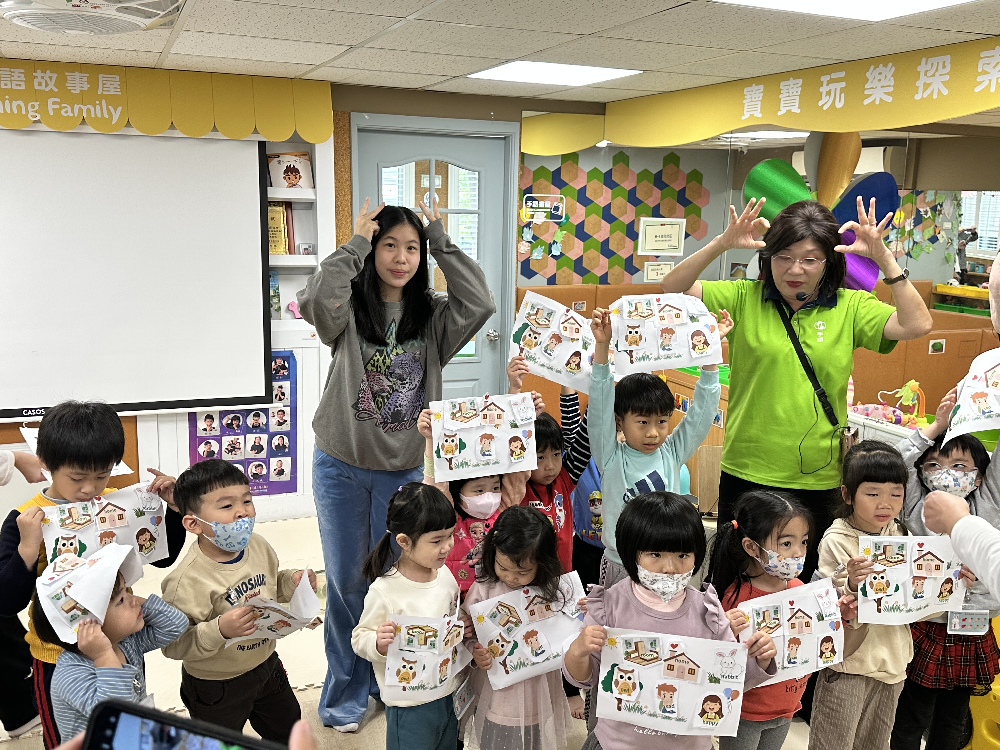
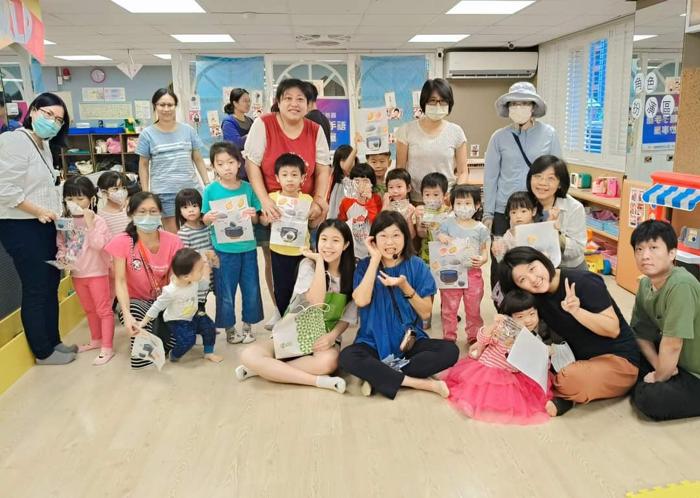
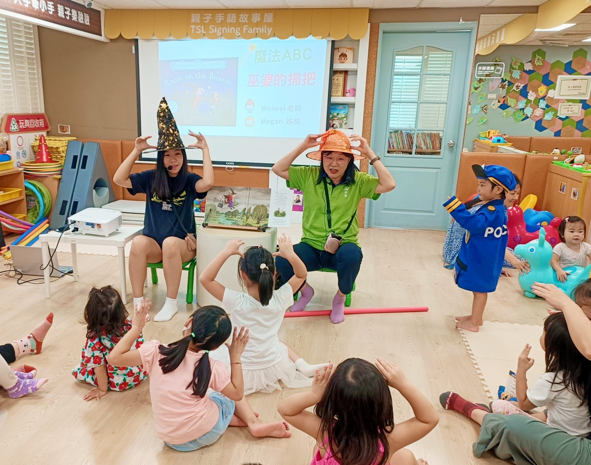
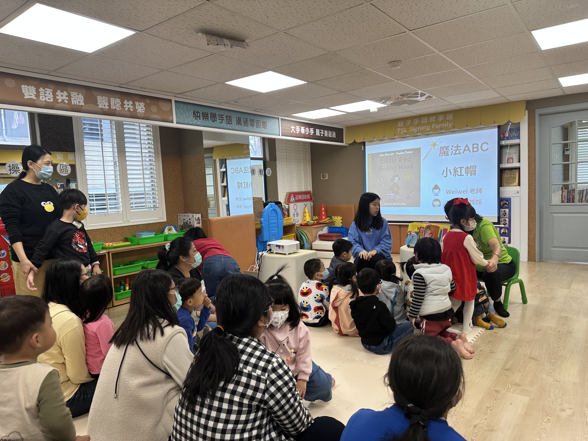

小手傳愛，
手語無礙
Echo Sign是由熱忱的青年志工組成，致力於透過創新的手語教學與繪本故事打破聾聽間的溝通隔閡，打造聾聽共融的世界！誠摯邀請充滿熱忱的你加入，與 Megan 一起小手傳愛！
準備好發揮你的
影響力了嗎？
成為 Echo Sign 志工，加入充滿創意與同理心的社群。你將學會如何用手語講故事，與聽障家庭建立聯繫，並在這過程中成長為有愛心與領導力的變革者！

Step 1: 選擇報名組別
加入我們，成為 Echo Sign 志工！您可以選擇加入活動組或募款組。

活動組
由 Grace Chu 帶領活動策劃。協助各類活動，像是參與雙語互動故事屋、創意手作與感官體驗、個別輔導與深度交流及手語圖卡專案等活動。
募款組
由 Cameron & Dylan 一同推動募款。募集運作資源、建立合作夥伴關係，並提升社會對聽障社群的關注。
Step 3: 開始行動
這是一個自我成長、回饋社會的絕佳機會，讓我們一起 Echo 愛，為聾聽共融而努力！ :)

如有任何疑問，請聯繫：Echosignn29@gmail.com